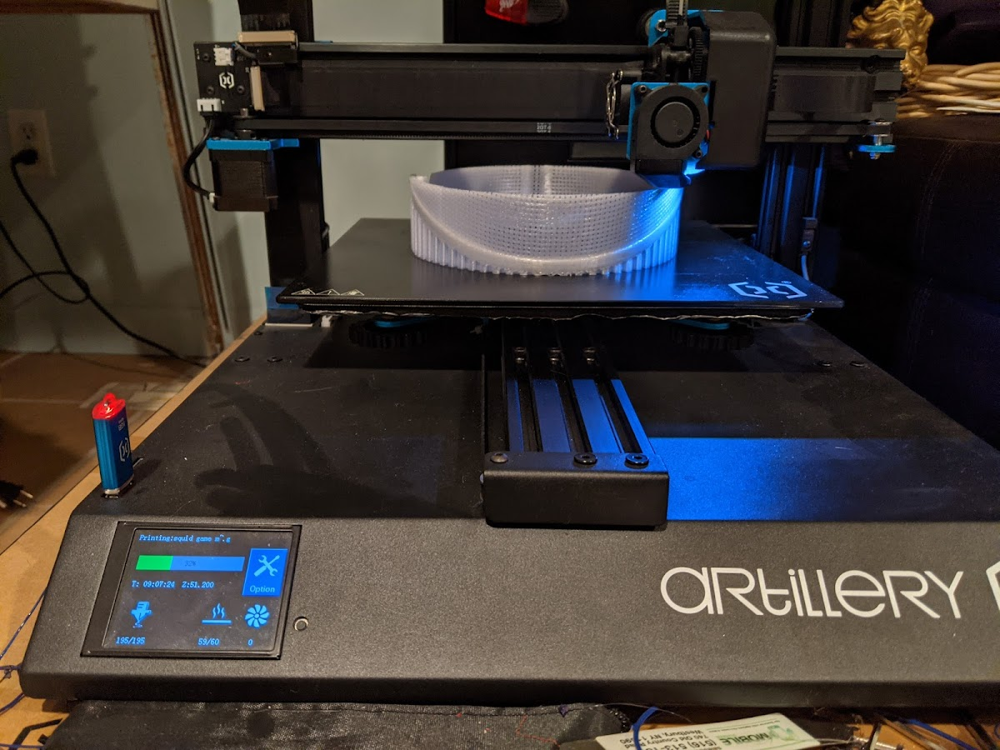
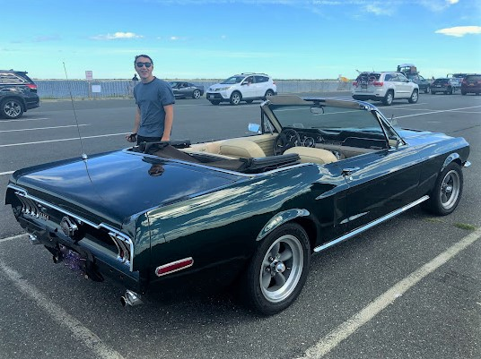
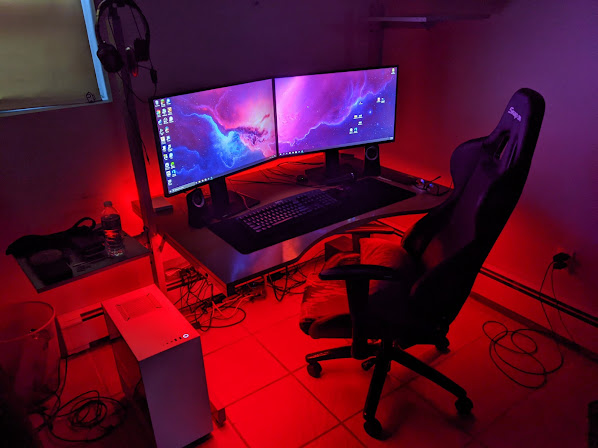

>3D Printing / 3D design:
Ever since I saw a 3D printer when I was 10, I was fascinated by the technology and the opportunities that came with it. Later that year I started basic designing 3d objects. After a few years I finally got myself a 3D printer of my own. I designed and built many small and useful parts that I use in my house everyday. For instance, I designed and printed a custom headphone holder for my desk, a towel hanger spacer for my bathroom door, and a gasket for my dad's convertible top. Without 3D printing these parts could cost almost hundreds in the case of the gasket - it is a rare part that isn't in production anymore.
>Automotive:

Growing up my after always brought me to car shows. He was always showing me what makes each car different and unique. Why the mustang was different than the Shelby GT500 or why the corvette built in Michigan was different from ones built in St. Louis. He is why I am good with my hands as he always tried to get me involved in basic repairs such as brake pads, oil changes, and tire rotations. In addition, he also showed me how to take a project car that didn’t run, and make it a good car to drive daily. We did everything from changing the exhaust to fully rebuilding the engine and even swapping a new engine.
>Computer Hardware:
In 2016 I discovered the idea of building a custom PC for yourself. From that point on I tried to learn everything I could. What CPU was good for what application, why you needed to get flash storage instead of hard drives. In 2019, when I turned 15, for a late birthday present my parents told me to get my wallet and go in the car. They drove me to the Microcenter in which I designed my custom PC for everything from the case, to the graphics card. The PC was exactly what I wanted. When I got home I got to work and put it all together - my first PC that I built. Nothing is a better feeling than having your first PC boot up on the first try. I use this PC everyday since then to do everything from discord, to homework, to gaming.
>Gaming:

Ever since I was little I always loved gaming. When I was 4 my parents got my sister and I a Wii. We played everything from Mario Kart to Wii Party. Then when I was in middle school I got an Xbox for the holidays. THis was the first time in which I played with my friends who weren’t in front of me. We played old games like Halo 3, Minecraft, MLB 2013. Then, when I got my first gaming PC, I started playing games like GTA V, Forza Horizon, Red Dead Redemption 2, and VR Chat.